TRIP OVERVIEW
Day 1 – Jemaa el-Fnaa · Ben Youssef Madrasa · Maison de la Photographie · Souks of Marrakesh
Day 2 – Bahia Palace · Saadian Tombs · El Badi Palace · Dar Si Said Museum
Day 3 – Mellah — Jewish Quarter · Koutoubia Mosque · Dar el Bacha Museum · Le Jardin Secret
Day 4 – Jardin Majorelle · Menara Gardens · Agdal Gardens
Day 5 – Ourika Valley · Ourika Waterfall
Day 6 – Palmeraie Palm Grove · Anima Gardens
Day 7 – Essaouira Medina · Essaouira Skala de la Ville · Essaouira Harbor
Day 8 – Almoravid Koubba · Musée de Marrakech · Maison Tiskiwin · Bab Agnaou
Day 9 – Imlil Village · Toubkal National Park
Day 10 – Agafay Desert
Day 1
🏨 From Hotel: 🚶 25 min · 🚕 8 min → Jemaa el-Fnaa
1.
Jemaa el-Fnaa
↳ The beating heart of the medina — an immense open square where snake charmers, storytellers, acrobats, and musicians perform alongside food carts and orange juice vendors. By day a marketplace in motion; by dusk the entire square transforms into a grand open-air theater.
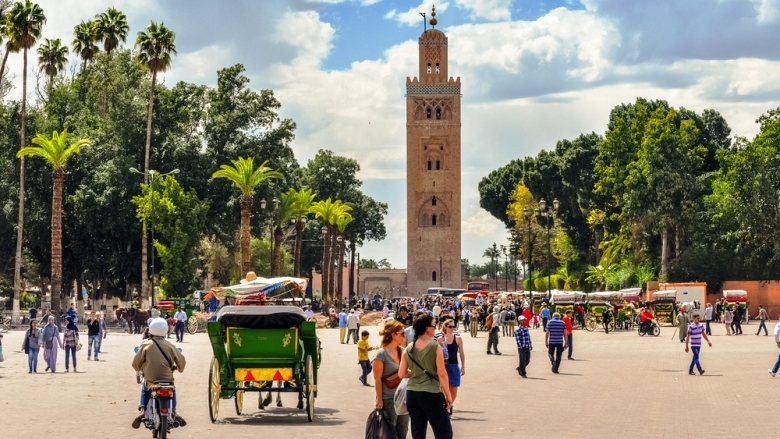
🚶 8 min · 🚕 3 min → Ben Youssef Madrasa
2.
Ben Youssef Madrasa
↳ A 14th-century Quranic college with one of the finest Islamic courtyard interiors in North Africa — carved cedar ceilings, intricate stucco arabesque, and a marble-paved central court. The student cells ring the upper galleries. A place of extraordinary stillness in the middle of the medina's noise.
🏛️ Daily 9:00am - 7:00pm
⏰ ~1h
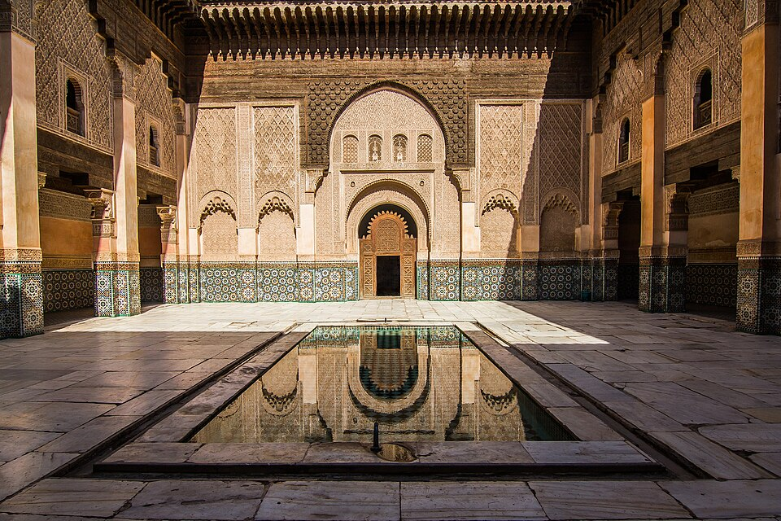
🚶 4 min · 🚕 2 min → Maison de la Photographie
3.
Maison de la Photographie
↳ A restored 19th-century riad housing 4,500 historical photographs of Morocco from 1870–1950 — Berber villages, mountain caravans, desert encampments, and the old medina before the age of electricity. The rooftop terrace looks over the medina to the Atlas Mountains on a clear day.
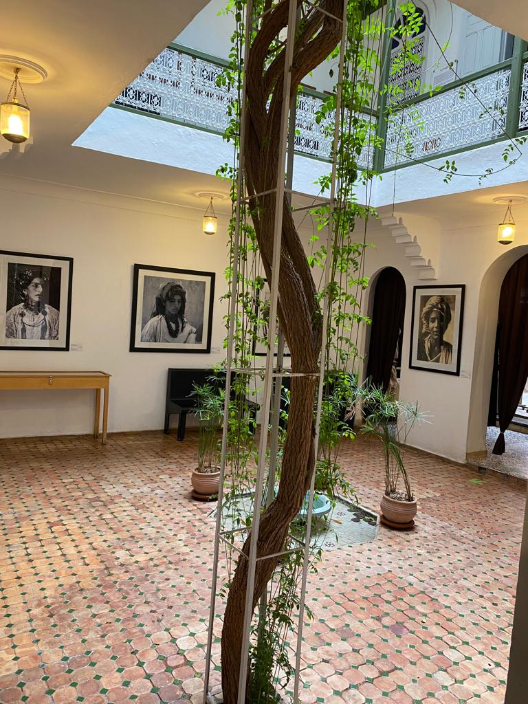
🚶 8 min · 🚕 3 min → Souks of Marrakesh
4.
Souks of Marrakesh
↳ The medieval guild market stretching north from Jemaa el-Fnaa — separate districts for spice sellers, dyers, silversmiths, leather tanners, carpet weavers, and lantern makers each in their own labyrinthine alleys. The dye pits run every color; the spice stalls are spectacularly arranged and deeply fragrant.
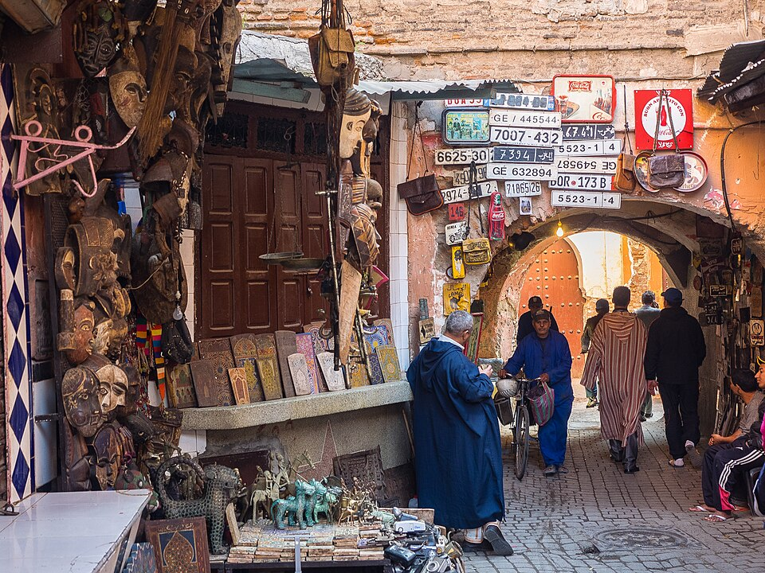
🚶 25 min · 🚕 8 min → hotel
Day 2
🏨 From Hotel: 🚶 20 min · 🚕 6 min → Bahia Palace
1.
Bahia Palace
↳ A sprawling 19th-century palace built for the Grand Vizier Ba Ahmed ben Mossa — 8 hectares of interconnected courtyards, zellij-tiled floors, carved plaster ceilings, and painted cedar canopies. The scale is palace-grade but the atmosphere remains intimate. Easy to get lost in, as intended.
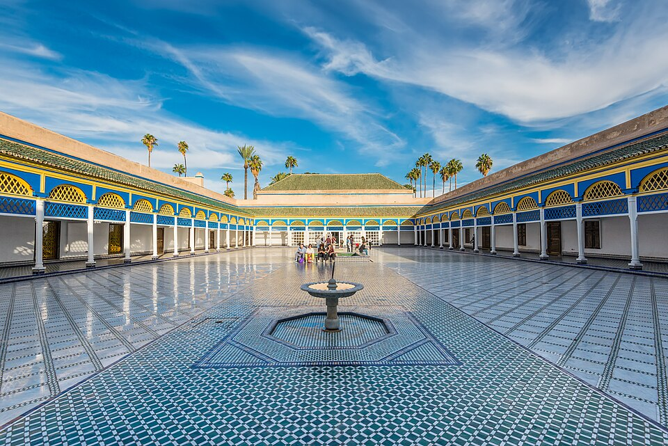
🚶 10 min · 🚕 3 min → Saadian Tombs
2.
Saadian Tombs
↳ The mausoleum of the Saadian dynasty, sealed by the Alaouite sultan Moulay Ismail in 1672 and rediscovered in 1917. Three halls of ornate carved plaster, Italian Carrara marble columns, and golden cedar ceilings — an architectural crown on the city's most intimate historic site.
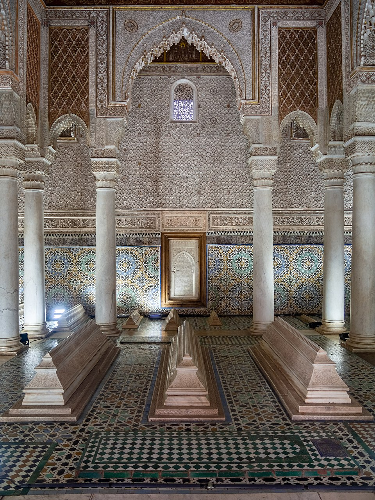
🚶 8 min · 🚕 3 min → El Badi Palace
3.
El Badi Palace
↳ A 16th-century palace built by Sultan Ahmed al-Mansour after the Battle of the Three Kings — stripped of its gold, onyx, and Italian marble by Moulay Ismail, leaving a vast ruin of sunken gardens, crumbling ramparts, and stork-nested towers. Walk the battlements at golden hour. The emptiness is the point.
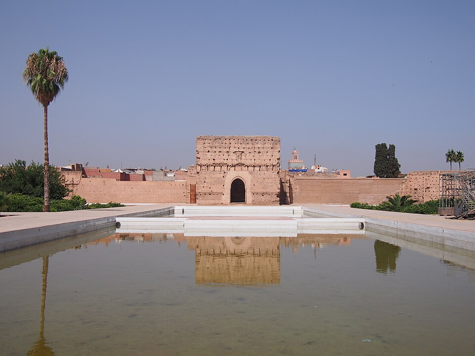
🚶 10 min · 🚕 3 min → Dar Si Said Museum
4.
Dar Si Said Museum
↳ A late 19th-century riad palace converted into Morocco's premier museum of traditional arts and crafts — carved cedar ceilings of extraordinary complexity, antique Berber jewelry, High Atlas carpets and weavings, painted Moroccan furniture, and ornate wedding palanquins. The courtyard alone is worth the visit.
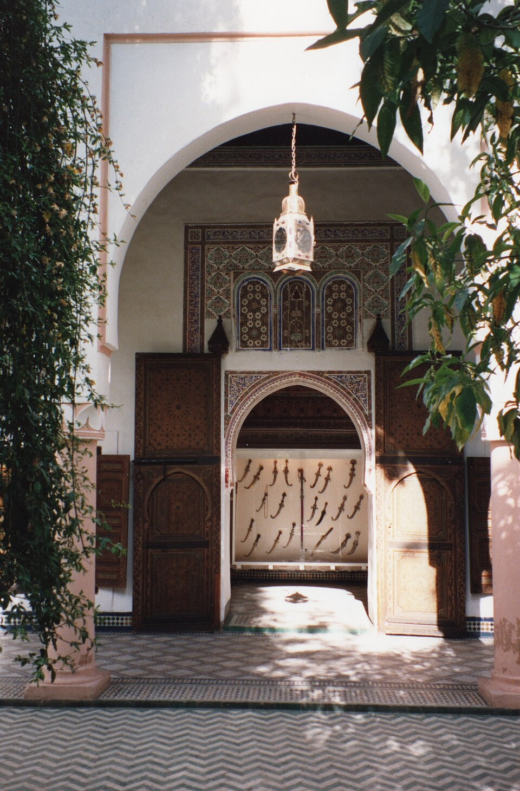
🚶 15 min · 🚕 5 min → hotel
Day 3
🏨 From Hotel: 🚶 22 min · 🚕 7 min → Mellah
1.
Mellah — Jewish Quarter
↳ The historic Jewish quarter of Marrakech, established in 1558 — narrow whitewashed lanes, wooden balconies that project over the street, and the Lazama Synagogue still in use. Moroccan Jewish culture shaped the city's trade, craftsmanship, and intellectual life for centuries. A quiet pocket of the medina.
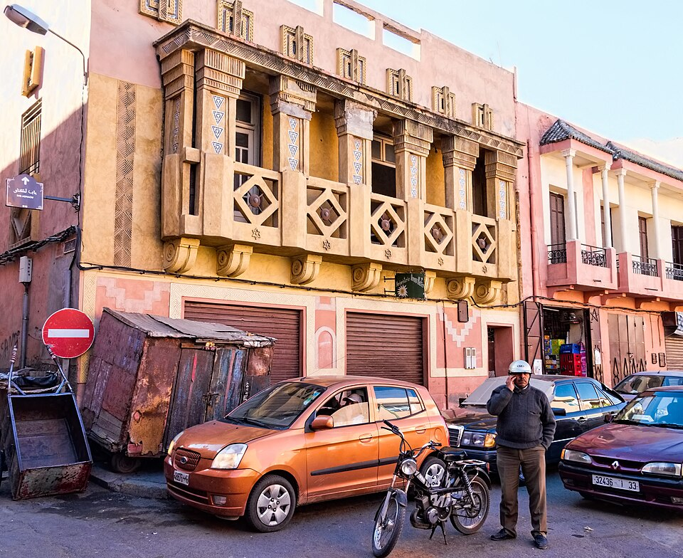
🚶 12 min · 🚕 4 min → Koutoubia Mosque
2.
Koutoubia Mosque
↳ The largest mosque in Marrakech — its 70-metre minaret, completed 1199, was the template for the Giralda in Seville and Hassan Tower in Rabat. Non-Muslims may not enter; the surrounding gardens and lawns facing the minaret are magnificent in the late afternoon.
🏛️ Open 24/7
⏰ ~30 min
⚠️ Non-Muslims may not enter the mosque interior

🚶 15 min · 🚕 4 min → Dar el Bacha Museum
3.
Dar el Bacha Museum
↳ A 19th-century palace converted to a museum of Islamic arts and civilizations — cedar-carved ceilings, zellij courtyard floors, and exhibits tracing the cultural connections between Marrakech and Andalusia, sub-Saharan Africa, and the Arab world. Fewer tourists than the palaces and better context than most.
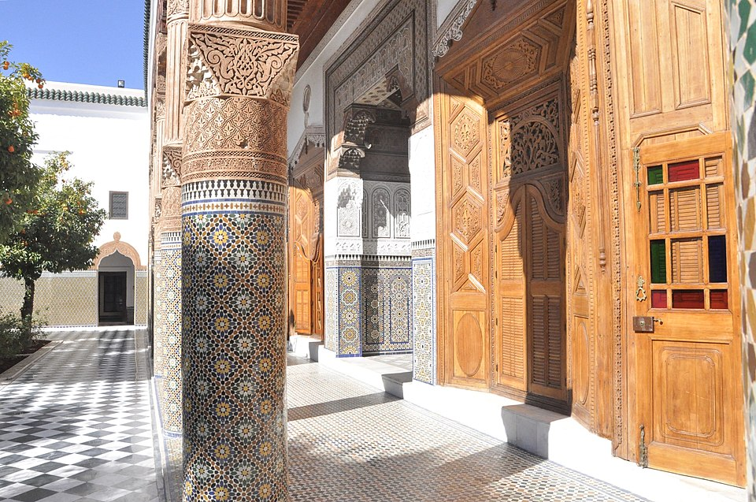
🚶 5 min · 🚕 2 min → Le Jardin Secret
4.
Le Jardin Secret
↳ A restored 16th-century Saadian riad garden hidden behind an unmarked doorway in the Mouassine quarter — two walled gardens, an Islamic water garden with fountains and orange trees, and an exotic garden of palms and rare planting. Quiet, thoughtfully restored, and one of the medina's best discoveries.
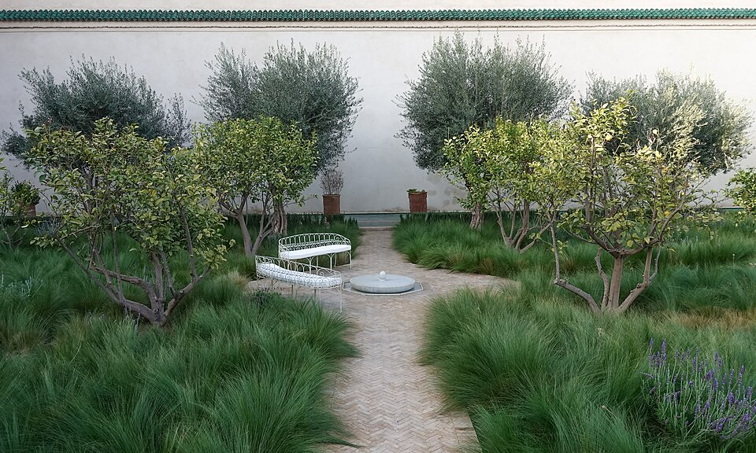
🚶 22 min · 🚕 7 min → hotel
Day 4
🏨 From Hotel: 🚶 12 min · 🚕 4 min → Jardin Majorelle
1.
Jardin Majorelle & Musée Yves Saint Laurent
↳ A surrealist garden created by French painter Jacques Majorelle in 1923 — electric cobalt-blue buildings, bamboo groves, cacti, and koi ponds. Yves Saint Laurent bought it in 1980 to save it from demolition; the adjacent YSL museum houses his fashion archive and Moroccan textile collection.
🏛️ Daily 8:00am - 5:30pm
⏰ ~2h
⚠️ Sells out · book online in advance · arrive at opening to avoid crowds
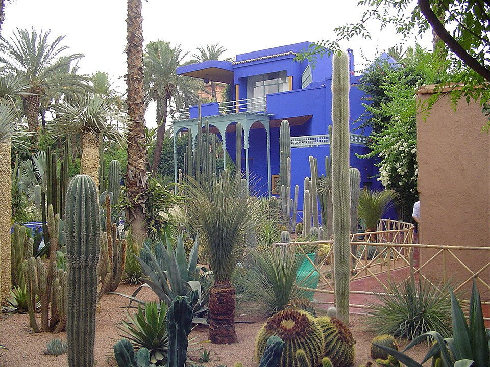
🚶 20 min · 🚕 7 min → Menara Gardens
2.
Menara Gardens
↳ A 12th-century Almohad royal garden of olive groves and a vast reflecting pool, with a 19th-century green-tiled pavilion on its bank and the Atlas Mountains as a backdrop. The views are best in late afternoon when the mountains glow behind the pool. One of the largest and oldest royal gardens in Morocco.
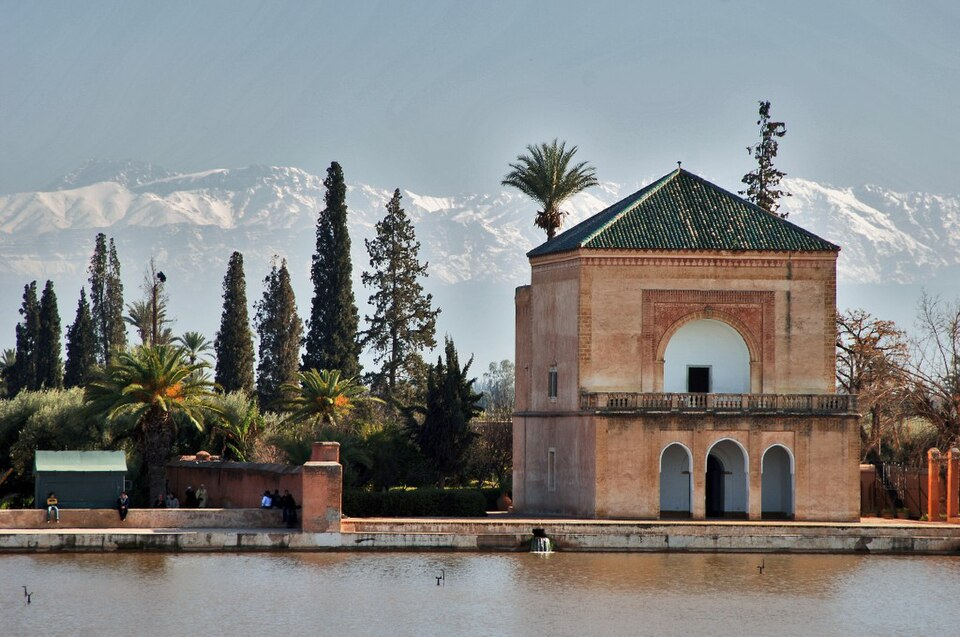
🚶 18 min · 🚕 6 min → Agdal Gardens
3.
Agdal Gardens
↳ A 12th-century royal garden covering 400 hectares south of the medina — orchards of olive, orange, fig, pomegranate and apricot trees surrounding two irrigation basins. Open to the public Fri & Sun when the king is not in residence. The scale is immense and the silence total.
🏛️ Friday 9:00am - 5:00pm · Sunday 9:00am - 5:00pm
🚫 Closed Monday, Tuesday, Wednesday, Thursday, Saturday
⏰ ~1h
🆓 Free
⚠️ Closed without notice when the palace is in use by the royal family.
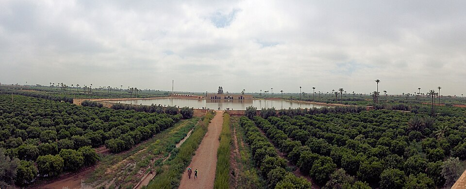
🚶 18 min · 🚕 7 min → hotel
Day 5
🏨 From Hotel: 🚕 45 min → Ourika Valley
1.
Ourika Valley
↳ A long valley carved by the Ourika River into the High Atlas foothills — Berber villages perched on cliffs above terraced gardens, and the Atlas peaks visible above. Walk into one of the villages, accept mint tea if offered. This is rural Morocco as it has been for centuries.
🏛️ Open 24/7
⏰ ~2h
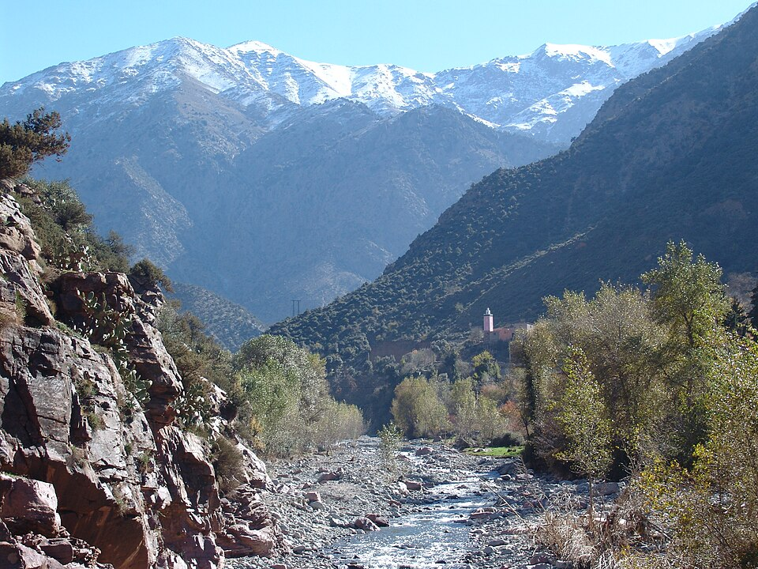
🚶 20 min · 🚕 5 min → Ourika Waterfall
2.
Ourika Waterfall
↳ A cascade at the head of the valley reached by a scramble up the riverbed between boulders — a short hike but the views open up as you climb. The falls pool in a clear basin below. Best in spring when snowmelt swells the river; still impressive in summer. Wear shoes you can get wet.
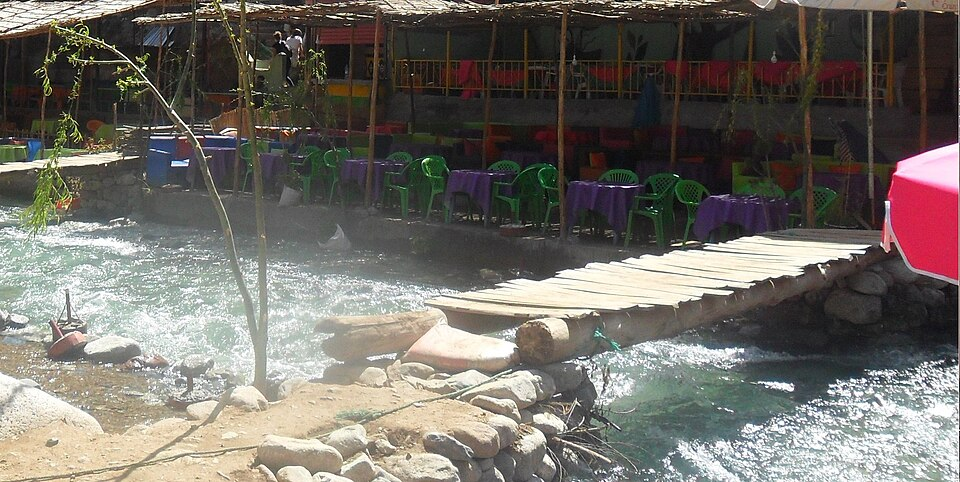
🚕 45 min → hotel
Day 6
🏨 From Hotel: 🚶 10 min · 🚕 6 min → Palmeraie
1.
Palmeraie Palm Grove
↳ A 13,000-hectare grove of date palms on Marrakech's northern edge — thousands of trees in golden light, the Atlas visible on clear days, camels weaving between the palms. Ride through at sunrise or late afternoon when the light is low. A desert oasis inside a city.
🏛️ Open 24/7
⏰ ~2h
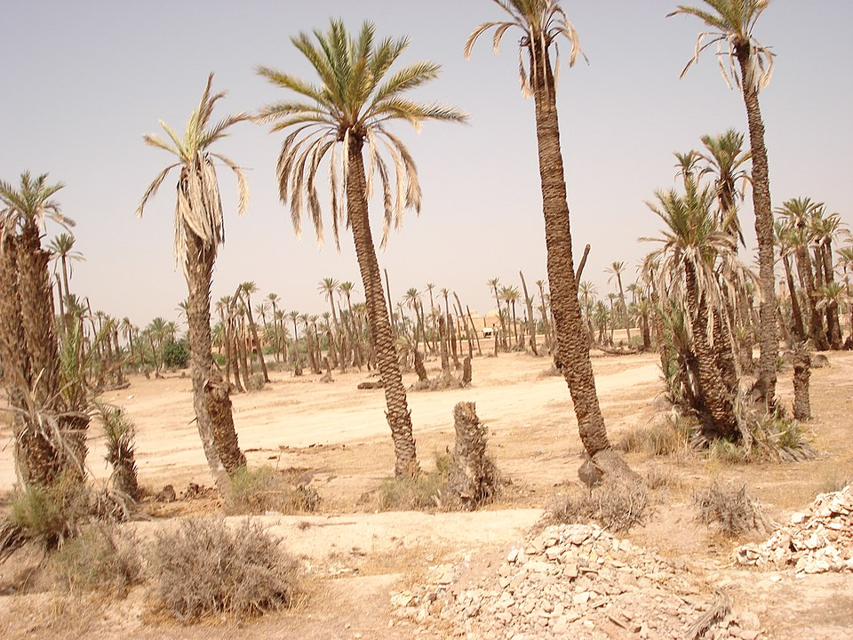
🚕 15 min → Anima Gardens
2.
Anima Gardens
↳ A private garden created by Austrian artist André Heller — 8 acres of lakes, tropical planting, stone sculptures, and a small museum of Moroccan and world art objects. Quieter and less famous than Majorelle but equally crafted, and the art embedded in the landscape gives it a genuinely unusual atmosphere.
🏛️ Daily 9:00am - 6:00pm
⏰ ~1.5h
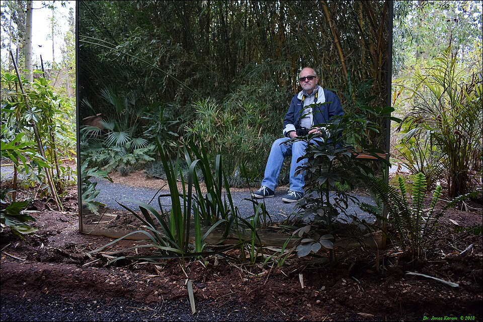
🚕 20 min → hotel
Day 7
🏨 From Hotel: 🚕 2h 30min → Essaouira
1.
Essaouira Medina
↳ A fortified coastal medina — UNESCO World Heritage City built by architect Théodore Cornut in the 18th century for Portuguese then French trade. Whitewashed walls, blue shutters, wind-carved alleyways. Quieter and more intact than Marrakech's medina.
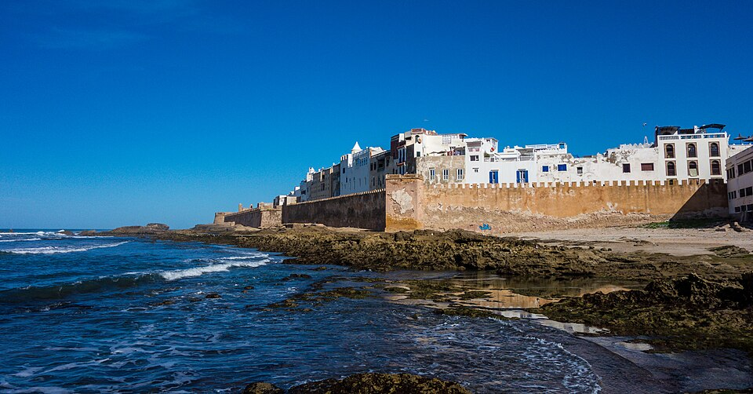
🚶 8 min · 🚕 3 min → Essaouira Skala de la Ville
2.
Essaouira Skala de la Ville
↳ The 18th-century sea bastion on the north end of the medina — a long rampart wall bristling with cast-iron Portuguese cannons, with the full Atlantic breaking below. Walk the entire length from tower to tower. The wind is relentless and the views are extraordinary.
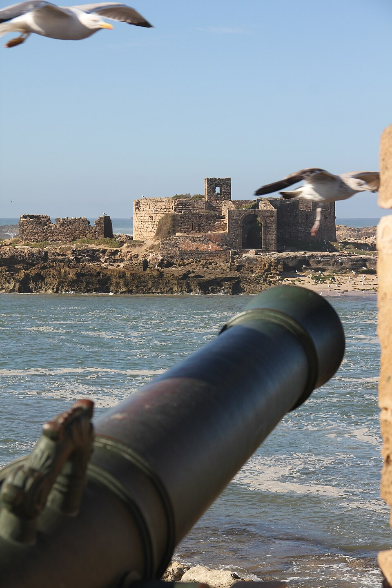
🚶 10 min · 🚕 4 min → Essaouira Harbor
3.
Essaouira Harbor
↳ The working fishing harbor — blue wooden boats packed in rows, fishermen mending nets, seagulls circling, and the catch laid out on the dock. The color of the boats against the blue-white walls is as good as photography gets in Morocco. Walk to the far end where the boats are repaired and the industry is rawest.
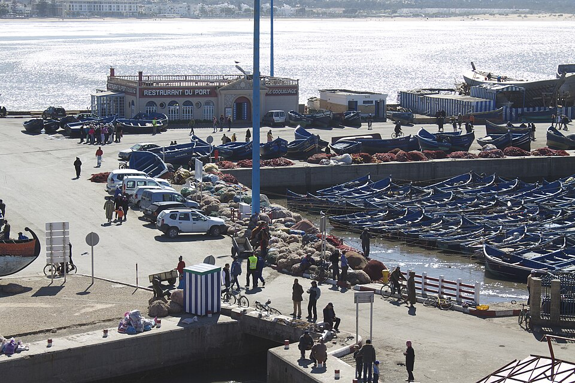
🚕 2h 30min → hotel
Day 8
🏨 From Hotel: 🚶 22 min · 🚕 7 min → Almoravid Koubba
1.
Almoravid Koubba
↳ The only surviving Almoravid structure in Marrakech — a 12th-century ablution pavilion whose carved stucco and stone decorative vocabulary became the template for all Moroccan architecture that followed. Tiny, sunken below street level, and usually uncrowded. An architectural origin point.
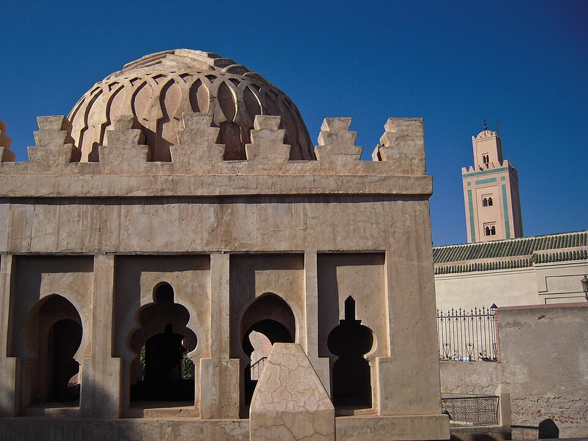
🚶 2 min · 🚕 2 min → Musée de Marrakech
2.
Musée de Marrakech
↳ A major late-19th-century riad — Dar Mnebhi — converted into a museum of Moroccan art, ceramics, and calligraphy. The central courtyard is one of the most beautiful rooms in the medina: a central fountain, zellige floors, carved plaster walls, and a hand-painted cedar ceiling three stories high.
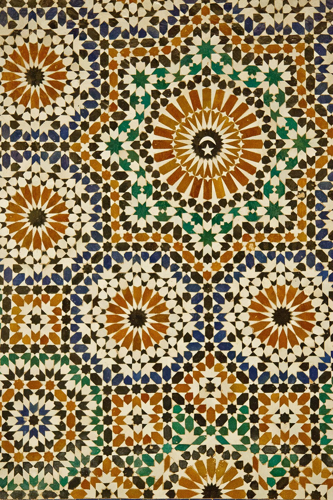
🚶 12 min · 🚕 4 min → Maison Tiskiwin
3.
Maison Tiskiwin — Bert Flint Collection
↳ A private collection by Dutch anthropologist Bert Flint — the most complete museum of Saharan Moroccan material culture in existence. Room by room it traces the trans-Saharan trade route: textiles, jewelry, musical instruments, saddles, and carved doors. An undervisited gem.
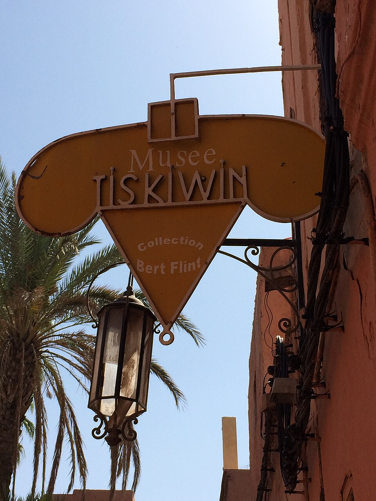
🚶 10 min · 🚕 4 min → Bab Agnaou
4.
Bab Agnaou
↳ The most ornate gate in Marrakech — a 12th-century Almohad ceremonial entrance carved from blue-grey Guéliz stone, its arch layered with five bands of geometric kufic script and interlaced floral rosettes. No other city gate in Morocco matches it for decorative ambition. Free to visit and perpetually uncrowded.
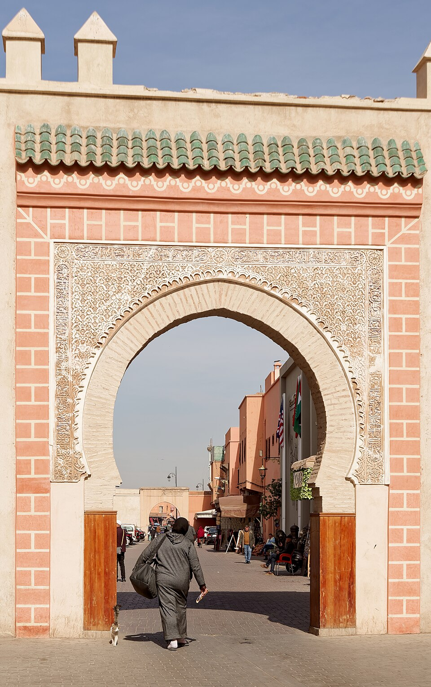
🚶 20 min · 🚕 7 min → hotel
Day 9
🏨 From Hotel: 🚕 1h 30min → Imlil
1.
Imlil Village
↳ A Berber mountain village at 1,740m in the High Atlas, below North Africa's highest peak — Mount Toubkal at 4,167m. The starting point for Toubkal summit attempts; day visitors walk the ridge trail for views of the valley and the peak. Total contrast to Marrakech below.
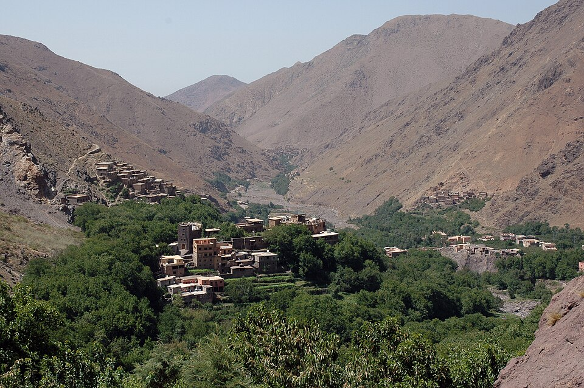
🚶 30 min · 🚕 8 min → Toubkal National Park ridge trail
2.
Toubkal National Park
↳ Morocco's first national park — glacial valleys, Atlas cedar forest, and the massive scree slopes of Jebel Toubkal. The 2-hour ridge trail from Imlil gives full views of the summit and the High Atlas spine without requiring a guide.
🏛️ Open 24/7
⏰ ~2h
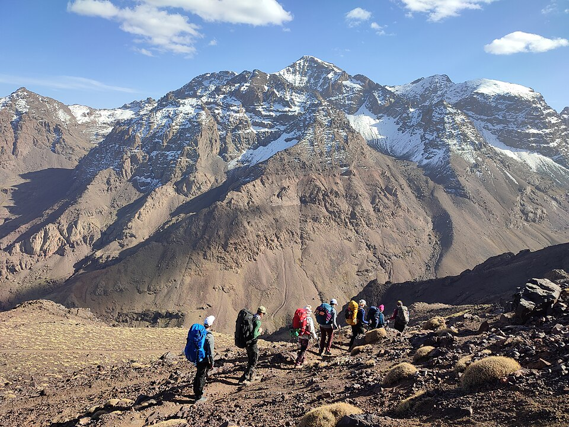
🚕 1h 30min → hotel
Day 10
🏨 From Hotel: 🚕 30 min → Agafay Desert
1.
Agafay Desert
↳ A rocky desert plateau 30 km southwest of Marrakech — not sand dunes but a moonscape of grey rock, scrub, and ancient stone, with the High Atlas peaks as a constant backdrop. The silence is absolute. Late afternoon the rocks turn amber and the Atlas turns purple.
🏛️ Open 24/7
⏰ ~4h
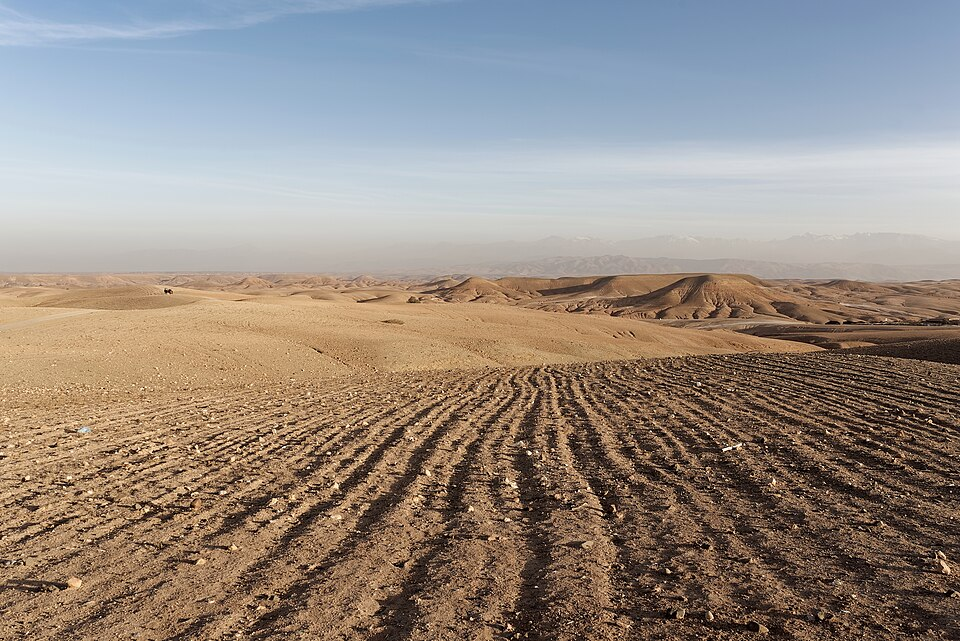
🚕 30 min → hotel
🗓️ Weekly Closures
Museums & Gardens · Closed Monday, Tuesday
📅 Tours
Viator
↳ A 3-hour guided walk through the northern medina — Ben Youssef Madrasa, Almoravid Koubba, the tanneries district, and the dyers' souk. Small group · max 10 · knowledgeable local guide · no rush.
🕐 9:00am · ⏳ 3h · 👥 max 10
🚶 25 min · 🚕 8 min
↳ A half-day out of the city into the High Atlas — Berber village visit, Ourika waterfall, valley walk with a local guide. Small group, returns by early afternoon.
🕐 9:00am · ⏳ 5h · 👥 small group
🏨 ↔ 🚐
↳ Bahia Palace, Saadian Tombs, and El Badi in one sweep — a focused half-day on the Kasbah quarter with expert cultural commentary. Efficient and well-paced.
🕐 9:00am · ⏳ 4h · 👥 small group
🚶 20 min · 🚕 6 min
↳ A small-group walking tour of the medina's less-visited spots — artisan workshops, hidden riads, neighborhood fountains, and the old Jewish quarter. Avoids the tourist circuit.
🕐 9:00am · ⏳ 3h · 👥 max 8
🚶 22 min · 🚕 7 min
↳ Combines the two best architectural monuments in Marrakech — Bahia Palace and Ben Youssef Madrasa — with a guided medina walk connecting them. Excellent for first-day orientation.
🕐 9:30am · ⏳ 4h · 👥 small group
🚶 20 min · 🚕 6 min
GetYourGuide
↳ A 3-hour morning walk through the medina with a local guide — souks — context · not shopping stops — historic monuments and neighborhood life. Departs daily.
🕐 9:00am · ⏳ 3h · 👥 max 12
🚶 25 min · 🚕 8 min
↳ A full day in the High Atlas — Ourika Valley, Berber village lunch, mountain walks. Returns by 6pm. Best single-day natural landscape excursion from Marrakech.
🕐 8:30am · ⏳ 9h · 👥 small group
🏨 ↔ 🚐
↳ Guided day trip to Essaouira — medina walk, ramparts, harbor, and free time. Guided commentary on the drive. Returns to Marrakech by 7pm.
🕐 8:00am · ⏳ 11h · 👥 small group
🚶 25 min · 🚕 8 min
↳ A focused 3-hour walk through the hidden medina and the Mellah — the Jewish quarter, its synagogue and ancient cemetery, and the quiet back lanes off the main routes. Specialist cultural history guide.
🕐 9:00am · ⏳ 3h · 👥 max 10
🚶 20 min · 🚕 6 min
↳ Guided day trip into the Imlil Valley — waterfalls, Berber villages, and full High Atlas views, with a Berber guide and mountain lunch. No summit attempt; accessible to fit walkers.
🕐 7:30am · ⏳ 10h · 👥 small group
🏨 ↔ 🚐
TripAdvisor
↳ A 3-hour small-group walk led by a local resident — neighborhood bakeries, Quranic school visits, rooftop views, and stories about medina life that guidebooks skip.
🕐 9:00am · ⏳ 3h · 👥 max 8
🚶 25 min · 🚕 8 min
↳ A half-day covering the Kasbah quarter's three major monuments — Bahia Palace, Saadian Tombs, El Badi ruins — with an expert guide explaining the Saadian and Alaouite dynasties.
🕐 9:00am · ⏳ 4h · 👥 small group
🚶 20 min · 🚕 6 min
↳ Full-day immersive Atlas Mountains experience — Berber family visit, argan oil cooperative, valley walk, and lunch at altitude. The cultural context lifts this above a simple scenic drive.
🕐 8:00am · ⏳ 9h · 👥 small group
🏨 ↔ 🚐
↳ Guided day trip to Essaouira with an expert guide — medina history, coastal fortifications, and the fishing harbor, with free time for lunch.
🕐 8:00am · ⏳ 11h · 👥 small group
🚶 25 min · 🚕 8 min
↳ A guided half-day covering Majorelle, Menara, and Agdal — the three major royal gardens of Marrakech with their architectural and botanical history explained. Efficient sequencing avoids midday heat.
🕐 8:30am · ⏳ 5h · 👥 small group
🚶 12 min · 🚕 4 min
☕ Cappuccino
Café Kif Kif · 4.4⭐ · 200+ reviews
Grand Café de la Poste · 4.3⭐ · 500+ reviews
Café du Livre · 4.4⭐ · 300+ reviews
🏛️ Monday - Saturday 9:00am - 9:00pm · Sunday 9:00am - 6:00pm
🚶 16 min · 🚕 5 min
Pâtisserie Al Jawda · 4.5⭐ · 150+ reviews
Café des Épices · 4.3⭐ · 1000+ reviews
🫕 Restaurants Near Hotel
Bo-Zin · 4.4⭐ · 1500+ reviews
↳ Asian-Moroccan fusion in a dramatic garden setting near the hotel.
🏛️ Daily 7:00pm - 12:00am
🚶 8 min · 🚕 3 min
Dar Moha · 4.5⭐ · 2500+ reviews
↳ Refined Moroccan tasting menus in a riad courtyard with pool.
🏛️ Tuesday - Sunday 12:00pm - 3:00pm · 7:30pm - 11:00pm
🚫 Closed Monday
🚶 18 min · 🚕 6 min
Le Jardin · 4.4⭐ · 3000+ reviews
↳ Mediterranean and Moroccan in a courtyard garden riad.
🏛️ Daily 10:00am - 10:00pm
🚶 22 min · 🚕 7 min
Café Arabe · 4.3⭐ · 2000+ reviews
↳ Italian and Moroccan in a restored medina house with reliable wine.
🏛️ Daily 12:00pm - 12:00am
🚶 23 min · 🚕 8 min
Nomad · 4.5⭐ · 4000+ reviews
↳ Contemporary Moroccan on a medina rooftop with Atlas views.
🏛️ Daily 12:00pm - 11:00pm
🚶 24 min · 🚕 8 min
🍽️ Downtown Restaurants
Dar Cherifa · 4.4⭐ · 1200+ reviews
↳ 15th-century riad with a literary bent and a candlelit courtyard.
🏛️ Daily 9:00am - 7:00pm
Pepe Nero · 4.5⭐ · 800+ reviews
↳ Italian fine dining in a restored medina riad with housemade pasta.
🏛️ Daily 7:00pm - 11:00pm
Zeitoun Café · 4.4⭐ · 600+ reviews
↳ Classic Moroccan comfort food in the Kasbah quarter.
🏛️ Daily 10:00am - 10:00pm
Mechoui Alley · 4.5⭐ · 400+ reviews
↳ Family stalls off Jemaa el-Fnaa serving slow-roasted whole lamb.
🏛️ Daily 11:00am - 4:00pm
Al Baraka · 4.3⭐ · 1500+ reviews
↳ Traditional Moroccan in a gilded salon overlooking Jemaa el-Fnaa.
🏛️ Daily 12:00pm - 11:00pm
🍮 Local Tastes
Tagine
↳ Morocco's national dish — slow-cooked stew in a clay vessel, named after the conical pot it cooks in. Lamb with prunes and almonds, chicken with preserved lemon and olives, or vegetable with chickpeas. The slow steam makes meat fall apart.
Pastilla
↳ Phyllo pastry filled with shredded pigeon or chicken, slow-cooked eggs, toasted almonds, and warming spices — dusted with powdered sugar and cinnamon. Sweet, savory, and fragile. A Fassi dish that traveled to Marrakech.
Harira
↳ Tomato-based soup with chickpeas, lentils, celery, and fresh coriander — eaten at breakfast, used to break the Ramadan fast. Thick, fragrant, warming. Order it with chebakia · honey sesame pastry · on the side the way Moroccans do.
Moroccan Mint Tea
↳ Fresh spearmint steeped in green tea with a generous pour of sugar — poured from a height to create a froth, refilled multiple times. Refusing the third glass is considered impolite. The ritual matters as much as the taste.
Argan Oil
🎭 Shows, Performances & Concerts
Fantasia — Chez Ali
↳ Fantasia · tbourida — 300 horsemen in traditional costume, live music, and a feast. The only permanent Fantasia venue near Marrakech.
🚶 35 min · 🚕 12 min
🚆 Train Stations Near Hotel
🚊 Marrakech Railway Station
ONCF national rail → Casablanca Voyageurs · 3.5h · Rabat-Agdal · 4h · Fès · 7h · Tangier · 8h.
🚶 18 min · 🚕 6 min
🚊 Marrakech Supratours Bus Station
Supratours → Essaouira · 2.5h · Agadir · 3h · Laâyoune · 12h · Adjacent to the railway station.
🚶 20 min · 🚕 7 min
⛲️ Day Trips by Train
No day trips from Marrakech.
⭐ Michelin Restaurants
No Michelin-starred restaurants in Marrakech. Morocco is not currently covered by the Michelin Guide.